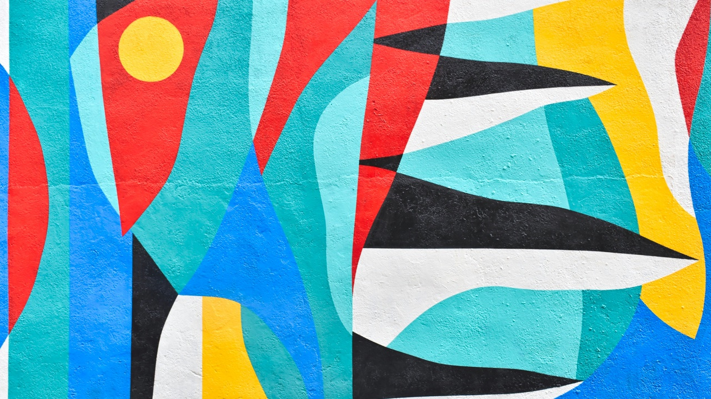
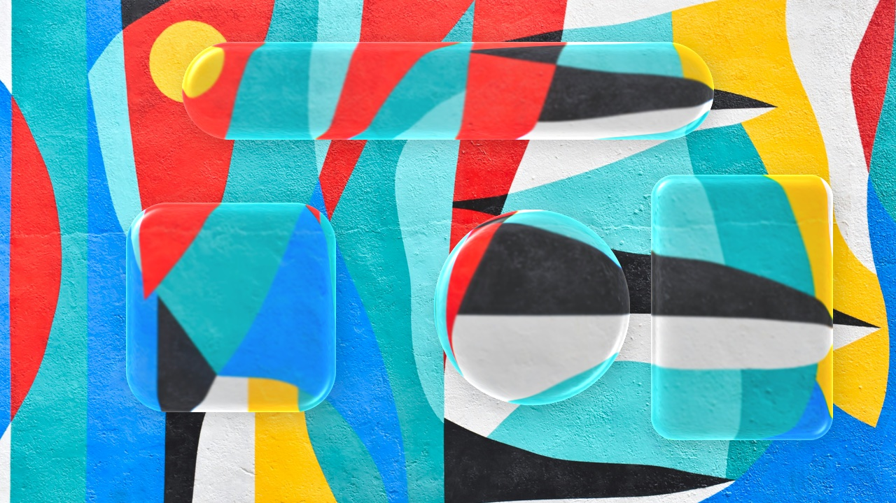

About
RefractLab turns a shape layer into a pane of glass. Apply the RefractLab effect to a shape layer and everything below it bends through the glass. Go for Apple-style Liquid Glass, frosted glass, or textured glass, and animate the shape any way you like.
Looks
Liquid and frosted


Textured
Tinted and outlined
Features
- Refracts every layer belowTurn any shape layer into glass that bends whatever is underneath it
- Liquid GlassHighlights where rounded corners catch the light
- Frosted glassControl the blur, and the strength and color of the frost
- Textured glass9 built-in reliefs (Reeded, Fluted, Waves, Ripple, Hammered, Rain, Glass Blocks, Facets, Noise) or any layer of your own
- 13 built-in presetsStart from a finished look, then fine-tune it
- Finishing touchesTint, saturation, a soft shadow, and an optional hairline stroke
- Fully animatableMove, scale, rotate, and animate the shape's path freely
- Production-ready8, 16 and 32-bit color, multithreaded
Setup
- Install. Run the installer. It asks for administrator permission, since After Effects plug-ins live in a shared folder.
- Restart After Effects. Start it, or restart it if it was already open.
- Apply the effect. Select a shape layer and choose Effect → RefractLab → RefractLab. Leave Background Layer at None: the shape turns to glass over everything below it.
- Pick a look. Choose one from the Preset menu at the top of the effect, then fine-tune the Bevel, Frost, Texture and Highlights settings.
- Optional: refract just one layer. Set it as Background Layer.
If the installer won't open
The installers aren't signed yet.
macOS: right-click the installer and choose Open. On macOS 15 and later, open System Settings → Privacy & Security instead and click Open Anyway.
Windows: if SmartScreen says it protected your PC, click More info, then Run anyway.
Advanced and uninstalling
Need the exact composite below?
On its own, RefractLab stacks the layers below with their opacity and the Normal, Add, Screen and Multiply blend modes; track mattes, 3D depth and adjustment layers below it are left out. To refract exactly what After Effects draws, put an adjustment layer above everything, apply RefractLab to it, and set Shape Layer to a (hidden) shape layer.
Where it installs
macOS: to uninstall, delete this folder.
/Library/Application Support/Adobe/Common/Plug-ins/7.0/MediaCore/RefractLab
Windows: to uninstall, use Settings → Apps → RefractLab for After Effects, or run Uninstall RefractLab.exe in this folder.
C:\Program Files\Adobe\Common\Plug-ins\7.0\MediaCore\RefractLab
Requirements
After Effects on macOS 12 or later (Apple Silicon or Intel), or on 64-bit Windows 10 or 11. Developed and tested on After Effects 2026; earlier versions haven't been tested. Everything runs locally: no accounts and no network calls.